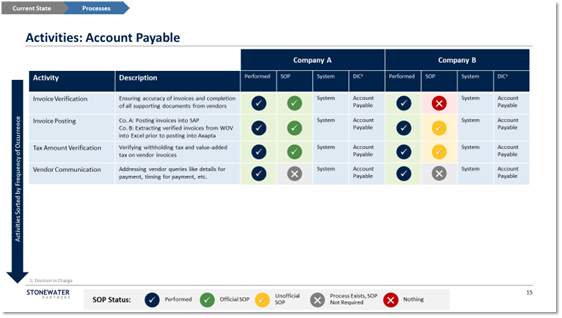

Having addressed “who” does the work in the organization redesign, the next key step is to tackle “what” they do and “how” they do it through a detailed process assessment and redesign. This involves an evaluation of how core processes are currently set up, assessment of all governance and decision processes, defining the future process design and service levels, and identifying possible process risks and potential incremental resource needs.
“The PMI effort offers the opportunity to take a fresh, independent view of all activities and processes the company runs, and not only make sure they can continue to function after the integration, but also, more importantly, determine whether activities are unnecessary and tackle serious problems that exist with the current state”
To deliver this step, Stonewater Partners employs thorough reviews of company procedures and process documentation, conducts detailed interviews with functional department leaders and staff, and maps the current-state process information in a proprietary business activity matrix (see Figure 2).

Our method goes function by function, department by department to document all key business activities performed by the org structure, starting with the most frequent tasks. We create a side-by-side view of whether and how each of the two companies performs the task, and documents what systems and tools are used by each side, whether there are standard operating procedures (SOPs) in place, and which department is responsible for the task. We also create a full inventory of departmental and management reports created throughout the organization, and assign priority based on their criticality, frequency, and who they are prepared for.
We maintain a detailed process risk and issue log for each activity, differentiating between low-effort quick wins and major transformations involving significant effort or investment. Our issue trackers capture any defects or inefficiencies in the current process design brought to our attention by division leaders and key employees. This method allows us to address existing process shortcomings and failures during the redesign and integration.
The business activity matrix we prepare provides a solid fact base for combining, streamlining, and redesigning the joint processes for the future state once the two organizations are merged. This redesign should start at the top with the corporate strategy narrative and governance processes, including a combined vision, mission and corporate values, a joint strategic planning process, joint strategies for go to market, innovation intellectual property, and a future-state legal entity structure.
One level down, we create a unified set of processes and procedures for day-to-day business functions, such as employment and HR policies (e.g., onboarding, training, vacation, termination and severance, T&E), legal, regulatory and compliance guidelines, financial and operational reporting, and standardized data definitions and consolidated datasets.
Interested in learning more? Find the next article in this series, “Systems and Technology in a Post-Merger Integration”, here.